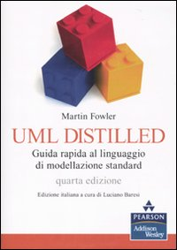

Besides all the slides available on this site, the following books are of fundamental importance, and we strongly encourage users to acquire them.

Properly organized suggestions for further readings are available on the "Lectures and Slides" page.